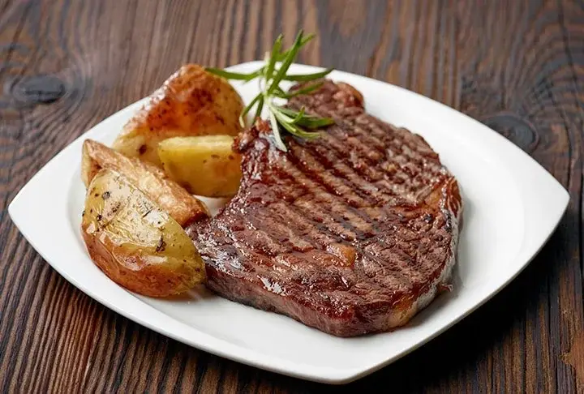

Grilled Entrecote

Description
Grilled entrecote is one of the easiest and tastiest dishes ever. With a couple of ingredients you can cook juicy,
tasty and soft steak.
Ingredients
- 250 grams of entrecote
- Sea salt
- Black pepper
- Olive oil
Steps
- Wrap the entrecote with a paper towel and wait 30 minutes. (We have to move blood from entrecote as much as possible.)
- Wash your entrecote in a bowl with olive oil and wait for 5 minutes.
- Heat the griddle until it reaches 200-220 degrees (If you don't have thermometer you can hold your hand over the griddle for
5 seconds. If you can't hold your hand more you should move to next step.
- Add some salt to the griddle. (Yes, not to entrecote.)
- Add some black pepper to the entrecote.
- Put your entrecote to the griddle and wait for 2 minutes. (Don't touch while grilling.)
- Turn your entrecote 90 degrees while grilling the same side. (Because same side needs more grilling and we want some grill marks :) )
- Add some salt and black pepper to not grilled side and turn the entrecote to start grill other side.
- Follow the 6th and 7th steps again and voila! Your juicy, tasty and soft entrecote is ready to eat :)
Homepage